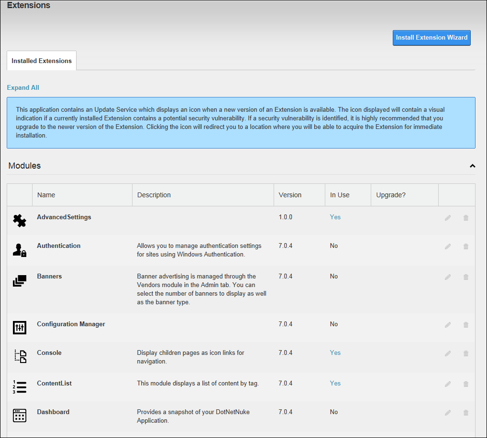

The Admin Extensions module allows users to view and manage the extensions that have been installed on the site and see which extensions are in use on this site. Administrators can perform all extension management tasks. Users that have edit rights to an Extensions module can view basic information about the installed extensions and update some authentication settings. Users that have edit rights for a page that the Extensions module is located on can view additional information about the installed extensions.
This module is pre-installed on the Admin > Advanced Settings >  Extensions page and can be added to additional pages.
Extensions page and can be added to additional pages.
Important. An additional Extensions module is located on the Host >  Extensions page. This version of the Extensions module allows SuperUsers can install and deploy additional modules.
Extensions page. This version of the Extensions module allows SuperUsers can install and deploy additional modules.

The Admin Extensions Module